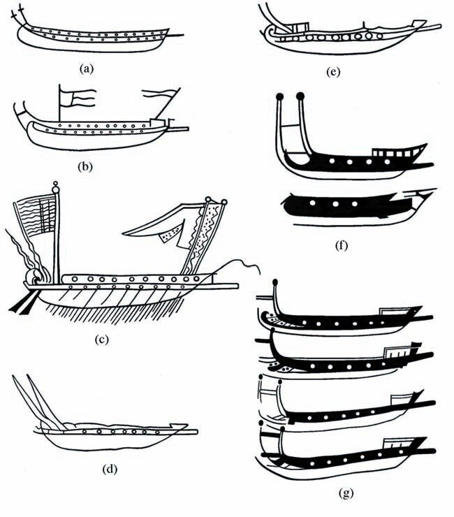

Ранее мы рассмотрели вкратце развитие систем гребли на галерах. Отметили в частности, что в XII веке появилась система alla zenzile, которая господствовала около четырех столетий. Посмотрим подробнее на развитие галер в этот период.
Мы уже отмечали ранее, что основу военного флота Византии до XI века составляли дромоны, которые наряду с армиями фем являлись одним из оплотов Византийской империи. Однако уже в начале XII века дромоны постепенно исчезают как боевые гребные корабли, название dromōn сначала стали использовать для транспортных судов и в конце концов даже это название постепенно исчезло из употребления. Почему это произошло? Чтобы объяснить это, вспомним, что сам термин дромон появился в позднюю античность потому, что он имел ряд значительных преимуществ над римской либурной (liburnae). Однако никто убедительно не сумел объяснить, в чем заключались эти преимущества. Дж. Прайор и Э. Джеффрейс в своей неоднократно упоминаемой нами книге «Век дромона» предположили, что эти преимущества нашли выражение в замене многоярусного расположения весел одноярусным, замене тарана шпироном, замене прямого паруса латинским и частичной палубы вдоль бортов корабля полной палубой, а также усовершенствовании носовых обводов корпуса, которые обеспечили бóльшую скорость, особенно в бою. Логично предположить, что и галера стала заменой дромона также в результате существенных изменений жизненно важных характеристик боевого корабля. В чем же состояли эти изменения? Чем галера, которая приняла свои стандартные формы к концу XIII века, отличалась от дромона?
О первых западноевропейских галерах известно очень мало. Лишь используя шерлок-холмсскую дедукцию (моя внучка считает, что понятие «дедукция» произошло от слова «дед», чем, естественно очень мне льстит) можно предположить, что ранние западные galeae почти наверняка первоначально копировали византийские galeai. Ранее мы уже видели, что термин galeai использовался для дромонов-монорем по меньшей мере уже в 905-906 гг. императором Львом VI, в то время как самый ранний случай употребления термина на латинском языке отмечается в конце XI века в Итало-норманских хрониках. Это были очень быстрые корабли со стремительными обводами корпуса – вот и все, что нам известно о первых западноевропейских галерах. Мы не знаем даже, были ли они моноремами – кораблями с одним рядом весел, как их византийские предшественники, или уже стали биремами.
Дошедшие до нас изображения не помогают, т.к. до середины 12 в. имеются только схематические изображения судов в стиле “банан”, не дающих никаких подробностей о конструкции корабля, кроме лишь того, что это были гребные суда с одним ярусом весел – моноремы. Первое ясное свидетельство о конструкции западноевропейской галеры появилось в маргинальных миниатюрах в манускрипте генуэзской хроники Annales Ianuenses (Paris, Bibliothèque National), начатой генуэзским консулом Каффаро и продолженной после его смерти.

Семь миниатюр 1125-1191 гг. сопровождают ссылки на galeae в анналах, показывая галеры с одним или двумя рядами портов для весел. (см.рис.). Важно отметить, что три миниатюры (1125, 1136, 1165, на рисунке – a, b и c), которые были сделаны при жизни Каффаро имеют 2 ряда весельных портов, а более поздние - 1168, 1170, 1175 и 1191 гг. (d-g) – имеют только один ряд портов. Различие между миниатюрами может таким образом представить свидетельства изменений в конструкции galea в течение XII века. Они могут дать основание для рабочей гипотезы, которую выдвинул Дж. Прайор и согласно которой в начале XII в. генуэзские галеры были биремами с двумя ярусами весел, один над другим, причем гребцы обоих ярусов гребли через порты в бортах, точно как у византийских дромонов. Тогда из этой первой гипотезы вытекает другая, что к концу XI века и византийские галеры, копией с которых были галеры генуэзские, также стали биремами, хотя в эпоху Македонских императоров они еще были моноремами в отличие от бирем-дромонов и бирем-хеландий. Четыре более поздних генуэзских миниатюры предполагают возможность следующей гипотезы, что во второй половине 12 в. произошло изменение к другой системе гребли, для которой нужен был только один ряд весельных портов в корпусе. (Впрочем, это могло быть и результатом творческого видения художника того времени. Не станем же мы делать вывод о том, что в начале ХХ века голова человека имела форму чемодана, основываясь на произведениях кубистов.)
Более реалистичными, чем миниатюры генуэзских анналов, являются три иллюстрации галер в знаменитом манускрипте «История византийских императоров в Константинополе с 811 по 1057 год, написанная куропалатом Иоанном Скилицей». (Madrid, Bibl. Nat., Ιωάννης Σκυλίτζης , Σύνοψις Ἱστοριῶν). О них мы поговорим в следующий раз.